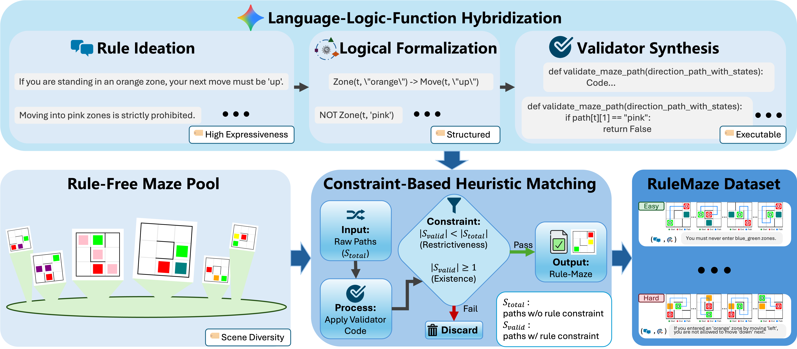
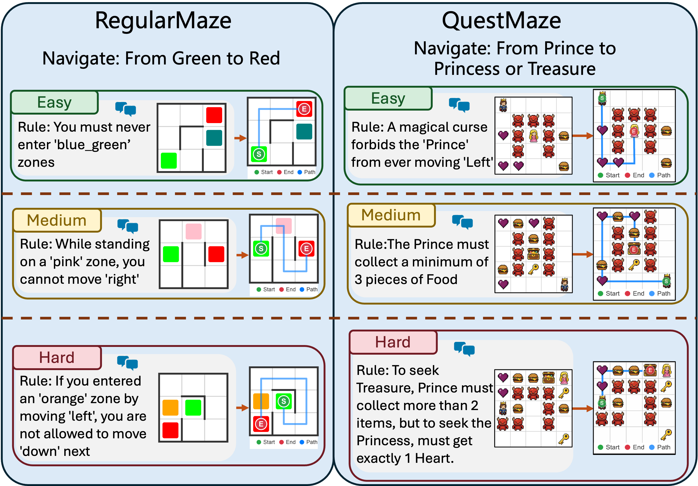
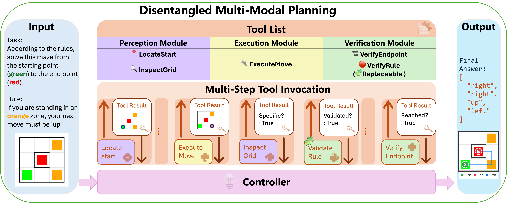
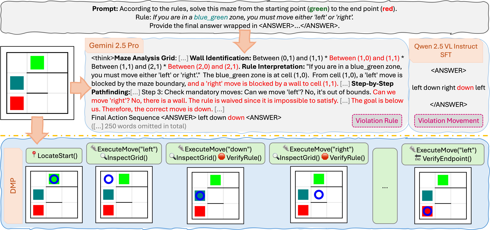

RuleMaze Benchmark
A controllable visual planning benchmark with diverse maze environments, natural-language rules, and executable trajectory validation.
ACM Multimedia
RuleMaze studies whether multimodal large language models can perceive visual mazes, interpret natural-language constraints, and produce valid multi-step plans that obey explicit rules.
1 Peking University · 2 Shenzhen Yinwang Intelligent Technology Co., Ltd
Multimodal large language models (MLLMs) combine linguistic reasoning with visual perception, yet their ability to perform visual spatial planning under explicit or previously unseen rule constraints remains underexplored. This setting requires models to jointly understand spatial layouts, interpret natural-language rules, and plan valid actions accordingly.
We introduce RuleMaze, a controllable benchmark in which MLLMs must navigate mazes while obeying natural-language rules of varying complexity. RuleMaze isolates rule-compliant spatial planning by requiring accurate perception, rule interpretation, and constrained action planning. To enable scalable rule construction, we propose Language-Logic-Function Hybridization, which automatically generates natural-language rules, translates them into logical representations, and compiles them into executable validators.
We further introduce Disentangled Multimodal Planning (DMP), which separates perception, execution, and rule verification through interpretable reasoning primitives. Experiments show that DMP substantially improves rule compliance and planning success compared to end-to-end textual planning baselines, especially under complex and previously unseen rules.
A controllable visual planning benchmark with diverse maze environments, natural-language rules, and executable trajectory validation.
A scalable rule construction pipeline that moves from rule ideation to logical formalization and synthesized validators.
A tool-based planning framework that modularizes perception, action execution, and rule verification for interpretable reasoning.

The start and goal locations are indicated by green and red cells. Rules refer to colored zones such as orange or pink, while other cells remain visually uniform. This setting emphasizes spatial reasoning under static goals and local rule constraints.
The start is represented by a prince icon and the goal by a princess or treasure icon. Rules involve symbolic objects such as keys and may depend on history, collected items, or changing goal conditions.

DMP treats rule-compliant spatial planning as an iterative tool-invocation process. Instead of asking a model to solve perception, execution, and rule checking in a single entangled forward pass, DMP trains a controller to decide when and how to invoke reusable tools.

LocateStart identifies the initial position, while
InspectGrid extracts symbols from specific cells.
ExecuteMove applies an action and returns an updated
visual state with the agent position marked.
VerifyRule checks trajectory compliance and
VerifyEndpoint checks whether the target is reached.
DMP improves both in-distribution performance and zero-shot generalization to unseen rules. The gains are especially pronounced on harder rule categories and on QuestMaze, where symbolic objects and history-dependent constraints make planning more complex.
| Scenario | Model | Seen EM | Seen PR | Unseen EM | Unseen PR |
|---|---|---|---|---|---|
| RegularMaze | Qwen2.5-VL SFT | 94.0 | 95.3 | 70.3 | 73.9 |
| RegularMaze | DMP-3B (Ours) | 98.0 | 98.4 | 90.0 | 92.7 |
| QuestMaze | Qwen2.5-VL SFT | 66.8 | 73.6 | 56.3 | 68.0 |
| QuestMaze | DMP-3B (Ours) | 91.4 | 94.3 | 88.0 | 91.7 |

Produces plausible navigation actions, but may violate the rule after entering a constrained zone because rule checking is not explicit.
Can identify spatial constraints in text, yet may waive a rule heuristically when a local move appears blocked.
Alternates between execution and rule verification, receiving immediate feedback and revising candidate plans when needed.
@inproceedings{chen2026rulemaze,
title = {Rule-Compliant Visual Spatial Planning for Multimodal Large Language Models},
author = {Chen, Yu and Lei, Ting and Li, Yaoyi and Cai, Jia and Wu, Zhecen and Liu, Yang},
booktitle = {Proceedings of the ACM International Conference on Multimedia},
year = {2026}
}